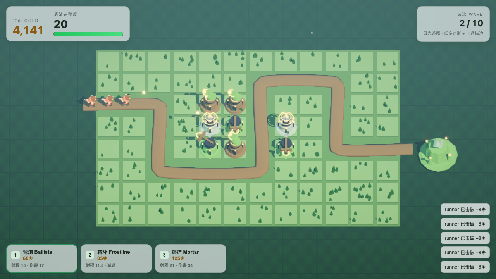
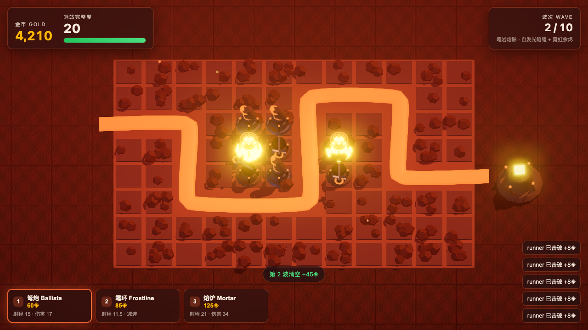
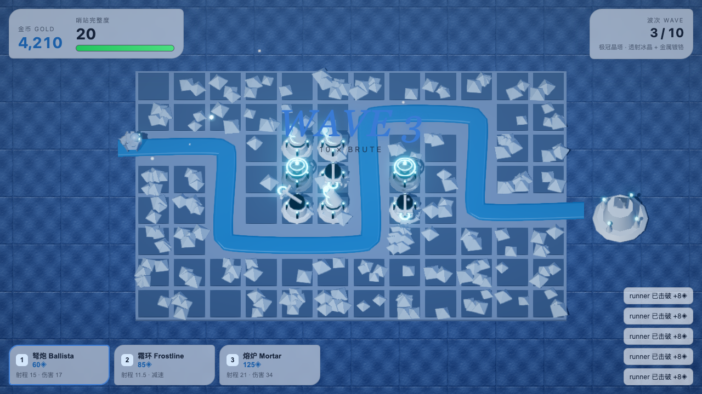

build-game 技能产物 · 同一套引擎与关卡，只有主题数据不同

低多边形苔原 + 卡通描边，正午暖光

曜岩熔脉 + 自发光熔缝，霓虹余烬

透射冰晶 + 金属镀铬，冷蓝雾
离线单文件把 three.js 打进 HTML，双击即玩；cdn/ 下是技能文档规定的 importmap 形态（首次打开需要联网）。 表中数字来自 scripts/check-result.json（217 条断言）与 scripts/build-sizes.json。